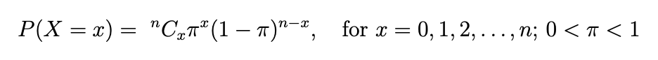

Probability
Notes on key probability concepts.
<<< go back to Topics
Complementary Events
The probabilities of all possible events add up to 1.
Therefore, the probability of one event happening = 1 minus the probability of it NOT happening.
e.g. the probability of rolling a die and getting a 6 is 1 minus the probability of NOT getting a 6.
We write this, for a generic event, A, as:
P(A) + P(A') = 1
=> P(A) = 1 - P(A')
=> P(A') = 1 - P(A)
We can also say that:
P(A) = P(A and B) + P(A and B')
Also...
P(A') = P(A' and B) + P(A' and B')
Independent Events
If two events, A and B, are independent, then:
P(A and B) = P(A) x P(B)
Also:
P(A | B) = P(A)
Mutually Exclusive Events
Two events, A and B, are mutually exclusive if:
P(A and B) = 0
i.e. A and B would never happen at the same time.
An example is the set of even numbers and odd numbers. A number can be even or odd but not both.
P(even and odd) = 0
Another way to think about this is that the events have no elements in common.
The Addition Law of Probability
P(A or B) = P(A) + P(B) - P(A and B)
e.g. in the venn diagram above, the probability that one of my friends chosen at random is studying maths or art is:
P(Maths or Art) = P(Maths) + P(Art) - P(Maths and Art)
I have 5 friends. 3 do maths, 2 do art. But I don't want to count Tom (who does both maths and art) twice so I need to adjust for that.
= 3/5 + 2/5 - 1/5
= 4/5
i.e. 4 out of my 5 friends do maths or art. (Only 1 friend, Kate, does NOT do maths or art.)
This is the same as the union of the 2 sets of elements i.e. the discrete set of elements that exist within the combination of the 2 events.
e.g. the blue area in the friends venn diagram:
There are 4 distinct elements (friends) in the union of the maths and arts sets (the blue area) out of a total of 5 friends, therefore the probability of a friend doing maths or art is 4/5 as we found above.
Tree Diagrams
Assuming events are independent, they can be represented on a tree diagram to calculate probabilities of outcomes.
Each branch represents the probability of that branch occuring.
To get the outcome representing the combination of those branches, we can multiple the probabilities together.
e.g. if we flip a coin and then pick a number (1, 2, or 3)...
Conditional Probability
The probability of A "given" B...
P(A | B) = P(A and B) / P(B)
e.g. in the friends example, the probability a friend is doing art given they are doing maths is the probability the friend is doing maths and art divided by the probability they're doing maths:
P(Art | Maths) = P(Art and Maths) / P(Maths)
= (1/5) / (3/5)
= 1/3
i.e. if we only look at the maths friends (3 of them), the number of friends doing both maths and art is 1.
General Multiplication Rule
P(A and B) = P(A|B)P(B)
...for all events, whether they're independent or not.
When A and B are independent events, the independence rule says that P(A|B)=P(A), and therefore the multiplication rule for independent events substitutes P(A) for P(A|B), and is therefore:
P(A and B) = P(A)P(B)
Higher Order Conditional Probability
P(A and B and C) = P(C | A and B) x P(B | A) x P(A)
Total Probability
P(A) = P(A|B)P(B) + P(A\B')P(B')
Bayes Theorem
P(A|B) = P(B|A)P(B) / P(A)
Counting Rules
The probability of an outcome happening is the number of ways that outcome can happen, divided by the total number of possible outcomes.
e.g. the probability of an Ace being drawn from a pack of 52 cards is 4/52 because we know there are 4 aces in a pack and that the pack contains 52 cards.
But what if we don't already know how many possible outcomes there are? How could we calculate them? The answer is 'using counting rules'...
Counting Rule 1
...determines the number of possible outcomes for n trials, where the number of possible outcomes remains the same for each trial, for events that are mutually exclusive and exhaustive.
e.g. the number of possible outcomes from flipping an ordinary coin three times.
The calculation is:
n
k
...where n is the number of trials, and k is the number of outcomes for 1 trial.
So, for the coin example, it would be:
3
2
= 2 x 2 x 2
= 8
i.e. HHH, HHT, HTH, HTT, THH, THT, TTH, TTT
Counting Rule 2
...extends counting rule 1 to deal with the situation when the number of possible outcomes differ between trials.
e.g. the number of possible combinations of a passcode where the the passcode consists of any 3 letters (A-Z) followed by any 3 numbers (0-9).
The calculation is the number of outcomes for each trial, multipled together:
(num outcomes from 1st trial) x (num outcomes from 2nd trial) x .....
So, for the passcode example:
There are 26 outcomes for each of the 3 letters => 26 x 26 x 26.
There are 10 outcomes for each of the 3 numbers => 10 x 10 x 10.
So, the number of outcomes for the passcodes is:
26 x 26 x 26 x 10 x 10 x 10
= 17,576,000
Counting Rule 3
...is used to find the number of ways all n items can be arranged.
e.g. how many ways can a red mug, blue mug, and yellow mug be arranged on a shelf?
The calculation is:
n!
So, for the mug example, there are 3 items (3 mugs), so the answer is:
3!
= 3 x 2 x 1
= 6
The scenarios are:
RBY, RYB, YRB, YBR, BRY, BYR
Counting Rule 4 - Permutations
Permutations are the number of ways a subset of n objects can be arranged when the order of those objects matters.
Assumes sampling WITHOUT replacement.
For example, we treat (A, B) and (B, A) as different events.
The number of ways of choosing k distinct items from n, when the order is relevant, is:
n
P
k
= n! / (n-k)!
e.g. the number of ways to choose 2 items from a set of 3 (e.g. {A, B, C}) is:
3
P
2
= 3! / (3-2)!
= (3 x 2 x 1) / 1
= 6
The 6 possibilities are:
AB, BA, AC, CA, BC, CB
Note:
0! = 1
1! = 1
Counting Rule 5 - Combinations
Combinations are the number of ways a subset of n objects can be arranged when the order of those objects does not matter.
Assumes sampling WITHOUT replacement.
For example, we treat (A, B) and (B, A) as the same event.
The number of ways of choosing k distinct items from n, when the order is NOT relevant, is:
n
C
k
= n! / [ (n-k)! x k! ]
e.g. the number of ways to choose 2 items from a set of 3 (e.g. {A, B, C}), when the order is NOT important is:
3
C
2
= 3! / [ (3-2)! x 2! ]
= (3 x 2 x 1) / (1 x 2)
= 6 / 2
= 3
The 3 possibilities are:
AB, AC, BC
Note:
0! = 1
1! = 1
Properties of All Probability Distributions
The sum of all probabilities for all possible outcomes must equal 1.
The probability for a particular outcome or range of outcomes must be between 0 and 1.
There are two types of distributions for a single random variable:
Discrete probability distributions for discrete variables.
Probability density functions for continuous variables.
Discrete Probability Distributions
A discrete> probability distribution is a list of all possible numerical outcomes, and the probability of each occurring.
The sum of the probabilities for that list is equal to 1.
For example:
The probability distribution for a fair die is:
| X |
P(X=x) |
| 1 |
1/6 |
| 2 |
1/6 |
| 3 |
1/6 |
| 4 |
1/6 |
| 5 |
1/6 |
| 6 |
1/6 |
The probability distribution for a loaded die, where a 6 is twice as likely as any other outcome, and all other outcomes are equal, is:
| X |
P(X=x) |
| 1 |
1/7 |
| 2 |
1/7 |
| 3 |
1/7 |
| 4 |
1/7 |
| 5 |
1/7 |
| 6 |
2/7 |
Expected Value (Mean) of a Discrete Variable
The expected value (mean) of a discrete variable, X, can be calculated by multiplying each outcome by its probability and summing those values.
e.g. in the loaded die example above the expected value (mean) is:
1*(1/7)
+
2*(1/7)
+
3*(1/7)
+
4*(1/7)
+
5*(1/7)
+
6*(2/7)
= (1+2+3+4+5+12)/7
= 27/7
= 3.857
Obviously its not possible to throw a 3.857 as only integer values between 1 and 6 inclusive can be thrown using the die. This number represents the mean average.
Variance of a Discrete Variable
The variance of a discrete variable can be calculated by multiplying each possible outcome's squared difference to the mean (expected value) by its probability, and then summing those numbers.
e.g. in the loaded die example above, the variance is:
(1 - 3.857)^2 * (1/7)
+
(2 - 3.857)^2 * (1/7)
+
(3 - 3.857)^2 * (1/7)
+
(4 - 3.857)^2 * (1/7)
+
(5 - 3.857)^2 * (1/7)
+
(6 - 3.857)^2 * (2/7)
= 11.28
Standard Deviation of a Discrete Variable
The standard deviation of a discrete variable is the square root of the variance of the discrete variable.
So, in the loaded die example, the standard deviation is the square root of 11.28, which is 3.36.
Types of Discrete Probability Distribution
Binomial distribution - for binary (only 2 outcomes) data e.g. flipping a coin
Poisson distribution - for 'count' data within a specific interval e.g. the number of cars that pass a checkpoint per hour.
Uniform distribution - for multiple events with the same probability e.g. rolling a fair die.
Binomial Distribution
You use the binomial distribution to solve problems where the discrete variable you're interested in is the number of events in a sample of n observations.
The binomial distribution's properties are:
- There are a fixed number of observations, n, in the sample e.g. 5 ticket machines
- Each observation is classified in one of two mutually exclusive and collective exhaustive categories e.g. working or broken
- The probability of an observation being classified as the event of interest (e.g. working), pi, is the same from observation to observation. Therefore the probability of an observation being classified as the event NOT of interest (e.g. broken) is 1-pi and is also constant from observation to observation.
- The value of an observation is independent of the value of any other observation. e.g. one ticket machine being broken doesn't affect whether another ticket machine is broken or not.
Example:
A bus station has 5 self-serve ticket machines. The probability of a ticket machine being broken is 0.15. Find the probability that the number of broken machines is exactly 2.
To answer this question, we can use the following calculation, where n is the number of trials and pi is the probability of success (the classification of interest).

Examples
So in the ticket machine example:
pi (the probability of the event having the classification of interest, or sometimes known as the probability of success) is 0.15,
n is 5,
and the probability that 2 machines are broken, i.e. P(X=2) is:
"5 Choose 2" x (0.15)^2 x (0.85)^3
The probability that at least 4 machines are broken is:
P(X >= 4)
= P(X = 4) + P(X = 5)
= ["5 Choose 4" x (0.15)^4 x (0.85)^1] + ["5 Choose 5" x (0.15)^5 x (0.85)^0]
The probability that at at most 2 machines are broken is:
P(X <= 2)
= P(X = 2) + P(X = 1) + P(X = 0)
= ["5 Choose 2" x (0.15)^2 x (0.85)^3] + ["5 Choose 1" x (0.15)^1 x (0.85)^4] + ["5 Choose 0" x (0.15)^0 x (0.85)^5]
Mean (Expected Value) of the Binomial Distribution
Variance of the Binomial Distribution
Standard Deviation of the Binomial Distribution
= square root of the variance